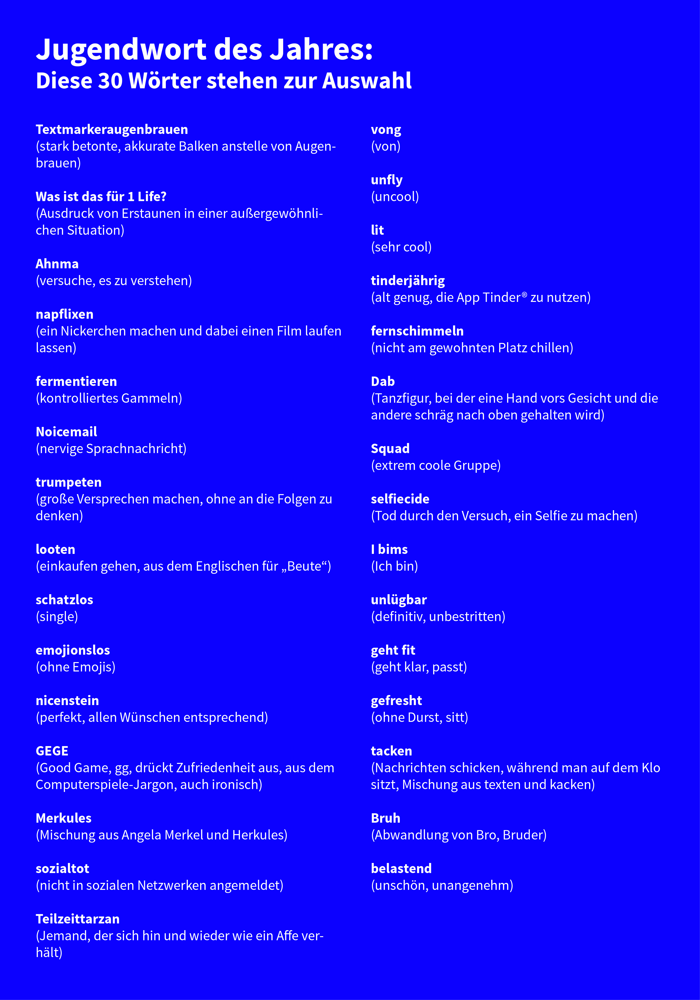

Das Jugendwort des Jahres
Seit 2008 verkündet der Langenscheidt-Verlag jedes Jahr das Jugendwort des Jahres. Und jedes Mal gibt es dazu große Diskussionen in den Medien. Für Comedians ist es immer wieder ein dankbares Thema, auf Twitter wird sich über die zur Wahl stehenden Worte lustig gemacht und auf Schulhöfen wird mit dem Kopf geschüttelt.
Aber wie kommen die Jugendworte des Jahres eigentlich zu Stande, und wieso scheinen sie selten etwas mit der tatsächlichen Jugendsprache zu tun zu haben?
Einreichen kann jeder ein Wort. Das geht über das Internet. In einem mehrstufigen Verfahren wird die Auswahl dann eingegrenzt. Aus 30 Favoriten darf dann die Online-Community abstimmen und die zehn beliebtesten Begriffe werden schließlich der 20-köpfigen Jury vorgelegt. Diese besteht aus zwei Sprachwissenschaftlern und 18 Bürgern verschiedener Altersklassen. Die Jury bestimmt dann das endgültige Jugendwort unter den Kriterien: „Originalität“, „Kreativität“, „Verbreitung“ und „Relevanz“.
2017 stehen folgende Begriffe zur Auswahl:

Wer nun von den meisten Begriffen noch nie etwas gehört hat, braucht sich nicht wundern, denn dass jeder ein Wort einreichen kann, hat den Nachteil, dass viele eben auch Worte vorschlagen, die nur in ihrem eigenen Freundeskreis verwendet werden. Wie Verbreitet die Worte tatsächlich landesweit sind, ist schwer zu beurteilen.
Ein weiterer problematischer Punkt ist die Aktualität der Worte. Manche der Vorgeschlagenen Begriffe sind bereits Jahre alt, aber an welchem Punkt bestimmt man, ob sie verbreitet genug sind um aktuelle Relevanz zu haben?
Viele der Begriffe sind außerdem an bestimmte Jugendkulturen gebunden. Ein Wort, dass beispielsweise in der Hip-Hop-Kultur verbreitet ist, wie der Gewinner von 2013 „Babo“, ist für eine Jugendliche, deren Interessen eher im Heavy Metal liegen völlig fremd.
Das Jugendwort zu finden, auf das sich ganz Deutschland einigen kann, ist also nahezu unmöglich. Sprache ist lebendig verändert sich stetig und ist immer abhängig von sozialen Schichten, kulturellen Hintergründen, Interessen und Freundeskreisen.
Der Versuch die kulturellen und sprachlichen Veränderungen eines gesamten Jahres für alle Jugendlichen schlüssig in einem Wort zu vereinen ist zwar ambitioniert, aber auch hoffnungslos.
Das ganze Theater nutzt somit am Ende vor allem einem: Dem Langenscheidt-Verlag. Denn der ganze Medienhype um das Wort ist natürlich ausgezeichnete Promo, um den Verlagsnamen in die Köpfe der Menschen zu bekommen und ein paar Wörterbücher mehr zu verkaufen.